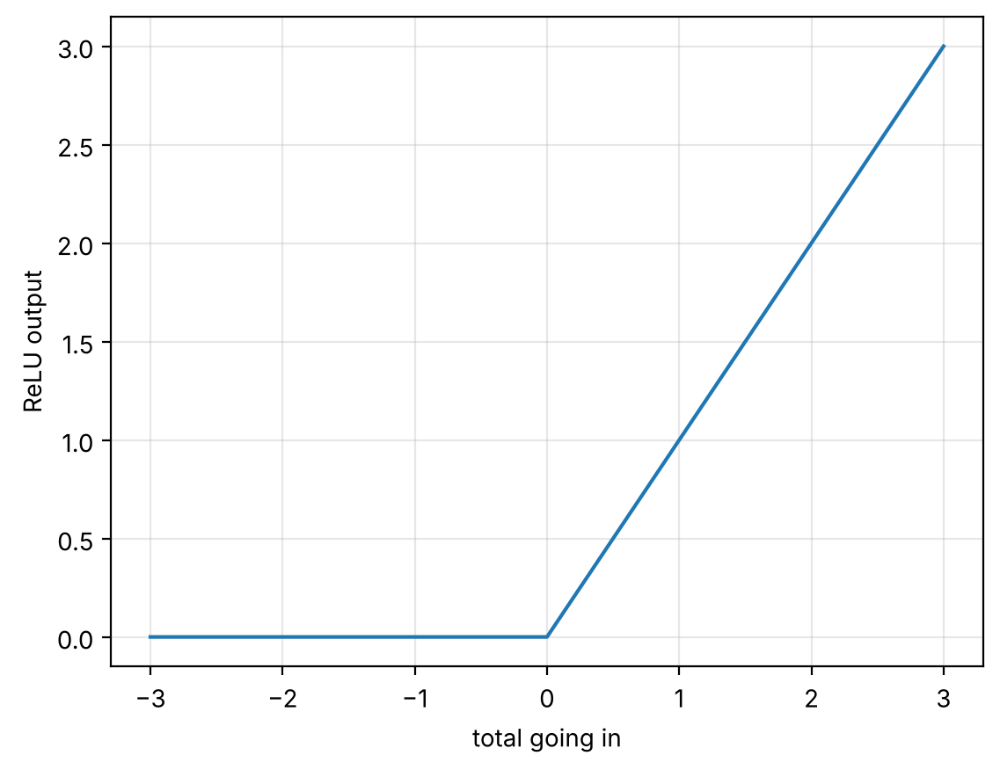

A short introduction. Each section below has its own video: the idea first, then the matching notebook steps. Captions are built in.
By the end of today you can:
- work out a neuron's output from its inputs, weights and bias
- explain what the bias does
- explain what ReLU does, and why a network needs it
- describe the layers of a neural network and count its weights
The Shape of a Neural Network
A neural network is made of neurons (also called nodes) arranged in layers:
- The input layer takes in the data. Each number gets its own input. One face is 3,072 numbers, so the Mood Machine has 3,072 inputs.
- The hidden layers sit in the middle and do the work. The Mood Machine has two: 256 neurons, then 128.
- The output layer gives the answer. The Mood Machine has 10 output neurons, one score for each mood.
Every neuron in one layer is connected to every neuron in the next. Each connection has a weight: a number that says how much that input matters to that neuron. Training means changing the weights until the answers come out right.
What One Neuron Does
Every neuron does three steps:
- Multiply each input by the weight on its connection.
- Add them all up, then add the neuron's bias.
- Put the total through the activation function. Ours is ReLU.
Here's a neuron with two inputs, worked through:
| Step | Working | Result |
|---|---|---|
| Multiply | 0.4 x 0.5 and −0.6 x 0.8 | 0.20 and −0.48 |
| Add up | 0.20 + (−0.48) | −0.28 |
| Add the bias | −0.28 + 0.1 | −0.18 |
| ReLU | −0.18 is negative, so it becomes 0 | 0 |
Move the sliders in the calculator and watch each step change.
In your notebook
Run the first two cells. Check that the notebook gives the same answer as the calculator.
The Bias
The weights decide how much each input matters. The bias is one extra number that belongs to the neuron itself, added after the inputs. It sets how easily the neuron switches on.
- A positive bias gives the neuron a head start. It can switch on even when its inputs are weak.
- A negative bias holds it back. The inputs have to add up to more before it switches on.
Think of a smoke alarm. The inputs are the amount of smoke. The bias is how sensitive the alarm is set to be. Turn the sensitivity up and a little smoke sets it off. Turn it down and it needs a lot.
Without a bias, a neuron whose inputs are all 0 would always output 0, whatever its weights. The bias lets it respond even then. Like the weights, every bias is learned during training.
In your notebook
Run section 2 to see the same inputs with three different biases. Then do the YOUR TURN cell: find the smallest bias that switches this neuron on.
ReLU
ReLU stands for rectified linear unit. Its rule is simple:
- If the total is negative, the output is 0. The neuron stays switched off.
- If the total is positive, it passes straight through unchanged.

Why does a network need it? Without an activation function, every neuron just multiplies and adds. Put one multiply-and-add layer after another and you still only get a multiply-and-add: one straight-line relationship, however many layers you stack. The notebook proves it: two layers with nothing between them give exactly the same answer as one combined layer.
ReLU puts a bend in the line. With thousands of neurons each bending at a different point, the network can build up complicated shapes, like the difference between a smile and a frown. This is what lets a deep network learn things a straight line never could.
In your notebook
Run sections 3 and 4. In section 4, compare "two layers, no ReLU" with "one combined layer". They give the same answer. Then look at the answer with ReLU in between.
Think
- Use the calculator to find settings that output exactly 0. Why do so many different settings give 0?
- A neuron's total is negative for every face it sees. What does it output, and does it help the network at all?
Answers
- ReLU turns every negative total into 0, so any settings that make the total negative give 0.
- It always outputs 0, so it adds nothing. You'll meet this "dead neuron" again in Session 9.
A Layer of Neurons
A layer is a group of neurons that all read the same inputs. Put each neuron's weights in one row of a table W, and one line works out the whole layer:
layer_out = torch.relu(W @ x + b)
@ is matrix multiplication. For each row of W, it multiplies by the inputs and adds up: steps 1 and 2 for every neuron at once. b holds one bias per neuron.
In practice, nn.Linear(inputs, neurons) makes the weights and biases for you, starting them at small random numbers. Each layer has one weight for every connection and one bias for every neuron. nn.Linear(2, 3) has 2 x 3 = 6 weights and 3 biases.
In your notebook
Run section 5. In the last YOUR TURN cell, work out how many numbers nn.Linear(3072, 256) has, then check.
Check Your Understanding
Check your understanding
1. Describe the structure of an artificial neural network. 3 points
2. A neuron has inputs 1 and 2, weights 0.5 and −0.5, and a bias of 0.2. Work out its output after ReLU. 2 points
3. Explain why a neural network uses an activation function such as ReLU. 2 points
What a full answer includes
1 Any 3 of:
- an input layer, one or more hidden layers and an output layer
- the layers are made of neurons (nodes)
- neurons in neighbouring layers are connected, and each connection has a weight
- each neuron adds up its weighted inputs and a bias, then applies an activation function
- the output layer gives the answer, for example one score per category
2 1 x 0.5 + 2 x (−0.5) + 0.2 = −0.3. ReLU turns a negative total into 0, so the output is 0.
3 Without it, every layer only multiplies and adds, so any number of layers behaves like one straight-line calculation. The activation function adds a bend, so the network can learn complicated, non-linear patterns.